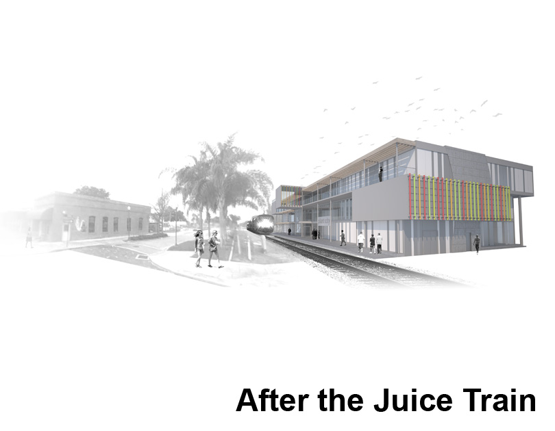

|  |
Reimagining Small Railway Stops
This project, my final thesis and last academic project, explored the potential of new developments in railway transit to influence small towns. The majority of small towns throughout the southeastern U.S. were formed along railways, but many are no longer connected to passenger trains. The ones that are often are no more than a place to wait. The building that was developed explored the possibility of sythesizing other programmmatic elements with the station in order to create a more dynamic destination to reinforce the already important role that the historic center plays within the town.
Location |
Plant City, FL |
Year |
Spring 2011 (Fifth Year) |
Type |
Academic (Thesis) |
Program |
Train station, grocery store, & bookstore |
Light Rail Systems |
|||
Rapid Transit Systems |
|||
High-Speed Rail Hubs |
|||
Commuter Rail Hubs |
|||
Cities investing in one type |
|||
Cities investing in two types |
|||
Cities investing in three types |
|||
Cities investing in all four types |
|||
Cities Investing in Rail TransitCities nationwide are investing in rail transit to relieve highway congestion and ameliorate growth. New high-speed, commuter, rapid transit, and light-rail systems are being developed, and many currently operating are slated for or in the process of expansion. |
Freight Railways |
|||
Amtrak |
|||
Tri-Rail Commuter Rail (Miami) |
|||
SunRail Commuter Rail (Orlando) |
|||
High Speed Rail (Cancelled) |
|||
TBARTA Long Distance Rail (future) |
|||
Railways in FloridaFlorida came into national spotlight with plans for a high-speed rail corridor between Tampa and Orlando, buth now this multi-billion dollar project has been cancelled. In spite of this recent cancellation, a multiplicity of local initiatives are still moving forward. Deploying existing freight routes for passenger use is proving to be much more feasible than building new rails and obtaining new right-of-ways. Systems in Miami, Orlando, and Tampa take advantage of track built many years ago throughout the state. Cities and towns born along these lines will have a new chance to connect to rail transit. |